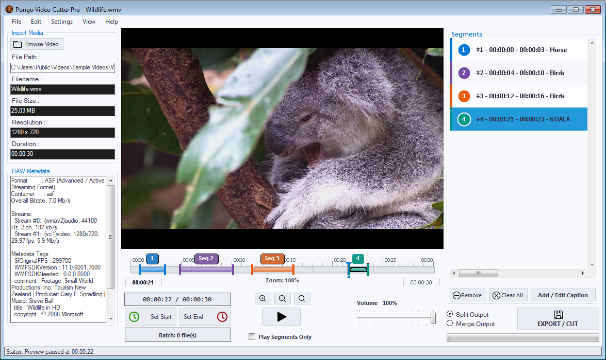

Pongo Video Cutter is a free and open-source video cutting tool for Windows. Cut, trim, and split your videos without watermarks, size limits, or registration. Download now and start editing your videos in seconds.
Features
- Fast Cutting: Cut video files quickly without re-encoding. Save time with stream copy technology.
- No Watermarks: Your videos stay clean. No watermarks, no logos, no forced branding.
- Format Support: Works with MP4, AVI, MKV, and other popular video formats.
- Private & Local: All processing happens on your computer. No uploads, no internet needed.
- Set Cut Points: Choose exact start and end times to cut precisely what you need.
- 100% Free: Completely free to use, modify, and distribute under the MIT license.
Download
Compatible with Windows 7, 8, 10, and 11 (32-bit & 64-bit)
Version 1.0.0 · Size: ~5 MB · MIT License
System Requirements
- Windows 7 or later
- 100 MB free disk space
- 1 GB RAM (2 GB recommended)
- No additional software required